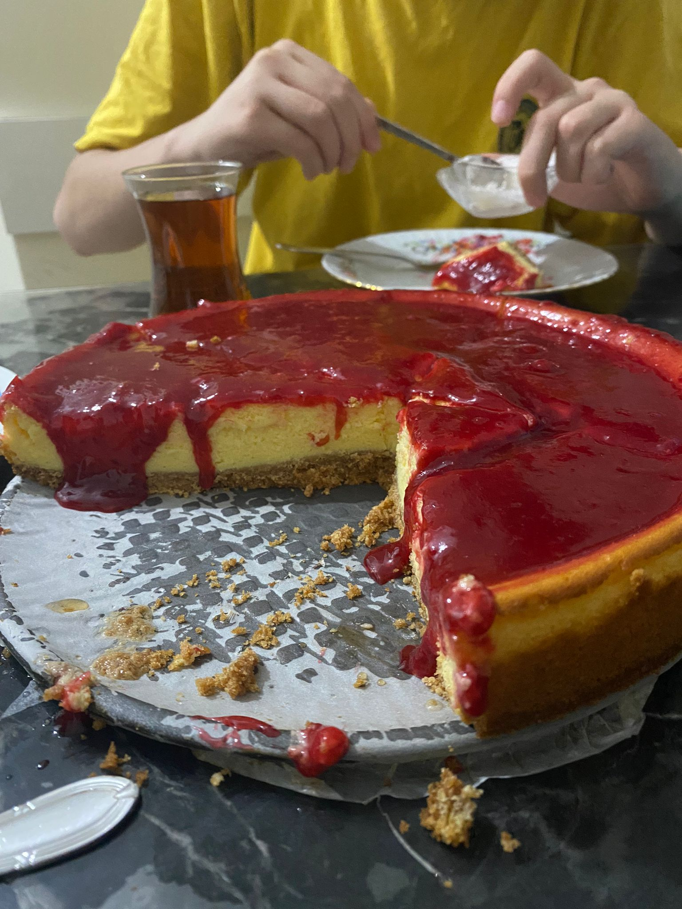
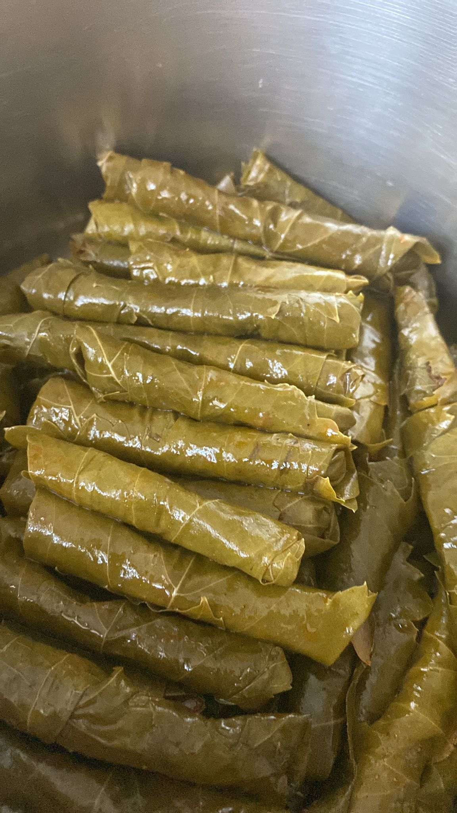

Hakkımda
Adım Şevval Melike. 22 yaşındayım. İstanbul’da yaşıyorum. Sakarya Üniversitesi'nde Bilgisayar Mühendisliği okuyorum. Teknolojiye ilgim çocukluk yıllarımdan geliyor ve bu ilgimi yazılım geliştirme üzerine yoğunlaştırdım.
Hobilerim
- Yüzme
- Film izlemek
- Müzik dinlemek
- Doğa yürüyüşü
- Yemek yapmak

Kendi yaptığım vişneli cheesecake 🍒

Ev yapımı zeytinyağlı yaprak sarma 🍃
Favori Etkinlikler
Boş zamanlarımda yüzme ve doğa yürüyüşüne çıkmak en çok keyif aldığım etkinlikler arasında yer alıyor. Ayrıca film izlemeyi ve farklı türde müzikler dinlemeyi severim.